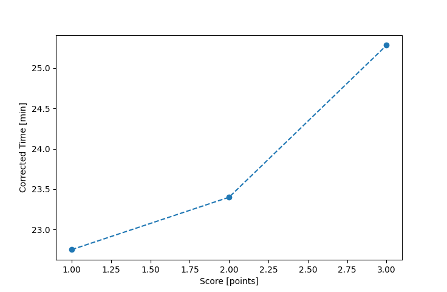

| Wind: | 2-3 (BFT) |
|---|---|
| RC: | Art_MRon_F |
| Date: | July 29, 2018 |
| Notes: | M2 ? Rounding |
| Rank / Score | Name | Boat | Input Time [mm:ss] | Input Offset [mm:ss] | Race Time [mm:ss] | Race Time [s] | Handicap | Corrected Time [s] | Corrected Time [mm:ss] |
|---|---|---|---|---|---|---|---|---|---|
| 1.0 | Mike_F | SF | 22:50 | 00:00 | 22:50 | 1370 | 1.00400 | 1365 | 22:45 |
| 2.0 | Bill_P | SF | 23:30 | 00:00 | 23:30 | 1410 | 1.00400 | 1404 | 23:24 |
| 3.0 | Lewis_V | BCN | 22:00 | 00:00 | 22:00 | 1320 | 0.87000 | 1517 | 25:17 |
| 4.0 | John_T | US-1 | DNF | -- | -- | -- | -- | -- | DNF |

Application Notes:
All race results are unofficial
View source code at https://github.com/cessnao3/portsmouthracecalc/